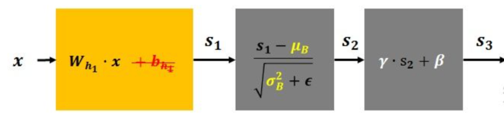

5 神经网络正则化¶
学习目标¶
- 知道正则化的作用
- 掌握随机失活DropOut策略
- 知道BN层的作用

在设计机器学习算法时不仅要求在训练集上误差小，而且希望在新样本上的泛化能力强。许多机器学习算法都采用相关的策略来减小测试误差，这些策略被统称为正则化。因为神经网络的强大的表示能力经常遇到过拟合，所以需要使用不同形式的正则化策略。
正则化通过对算法的修改来减少泛化误差，目前在深度学习中使用较多的策略有参数范数惩罚，提前终止，DropOut等，接下来我们对其进行详细的介绍。
1 Dropout正则化¶
在训深层练神经网络时，由于模型参数较多，在数据量不足的情况下，很容易过拟合。Dropout，中文是随机失活，是一个简单又机器有效的正则化方法。

- 在训练过程中，Dropout的实现是让神经元以超参数p的概率停止工作或者激活被置为0,未被置为0的进行缩放，缩放比例为1/(1-p)。训练过程可以认为是对完整的神经网络的一些子集进行训练，每次基于输入数据只更新子网络的参数。
- 在测试过程中，随机失活不起作用，最后的输出结果要乘以P。
我们通过一段代码观察下dropout的效果：
import torch
import torch.nn as nn
def test():
# 初始化随机失活层
dropout = nn.Dropout(p=0.4)
# 初始化输入数据:表示某一层的weight信息
inputs = torch.randint(0, 10, size=[1, 4]).float()
layer = nn.Linear(4,5)
y = layer(inputs)
print("未失活FC层的输出结果：\n", y)
y = dropout(y)
print("失活后FC层的输出结果：\n", y)
if __name__ == '__main__':
test()
程序输出结果：
未失活FC层的输出结果：
tensor([[-0.8369, -5.5720, 0.2258, 3.4256, 2.1919]],
grad_fn=<AddmmBackward0>)
失活后FC层的输出结果：
tensor([[-1.3949, -9.2866, 0.3763, 0.0000, 3.6531]], grad_fn=<MulBackward0>)
上述代码将 Dropout 层的概率 p 设置为 0.4，此时经过 Dropout 层计算的张量中就出现了很多 0 , 未变为0的按照（1/(1-0.4)）进行处理。
2 批量归一化(BN层)¶
在神经网络的训练过程中，流经网络的数据都是一个 batch，每个batch 之间的数据分布变化非常剧烈，这就使得网络参数频繁的进行大的调整以适应流经网络的不同分布的数据，给模型训练带来非常大的不稳定性，使得模型难以收敛。如果我们对每一个batch 的数据进行标准化之后，数据分布就变得稳定，参数的梯度变化也变得稳定，有助于加快模型的收敛。

写成公式如下所示：

- λ 和 β 是可学习的参数，它相当于对标准化后的值做了一个线性变换，λ 为系数，β 为偏置；
- eps 通常指为 1e-5，避免分母为 0；
- E(x) 表示变量的均值；
- Var(x) 表示变量的方差；
批量归一化层在计算机视觉领域使用较多，具体使用方法我们到后面在给大家进行介绍。
3 小结¶
- 知道正则化的作用
- 掌握随机失活DropOut策略
- 知道BN层的作用